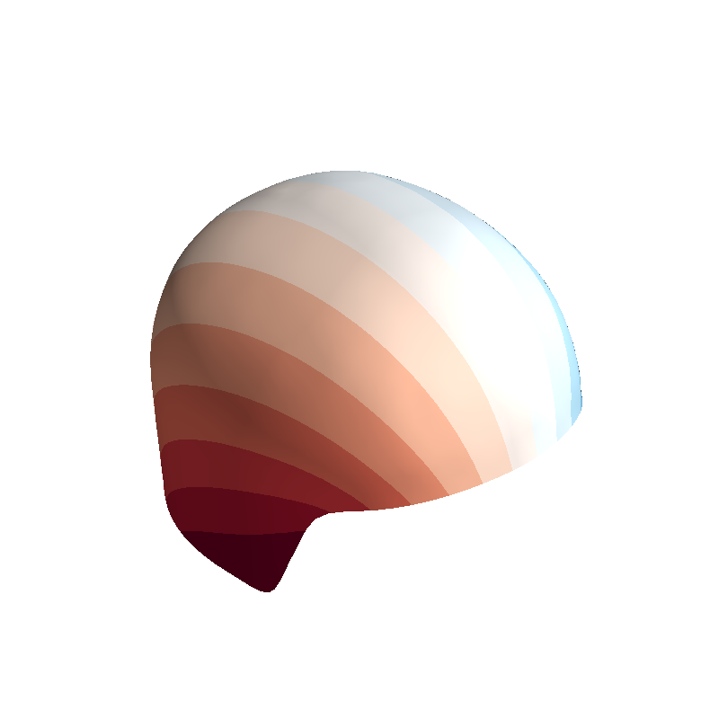
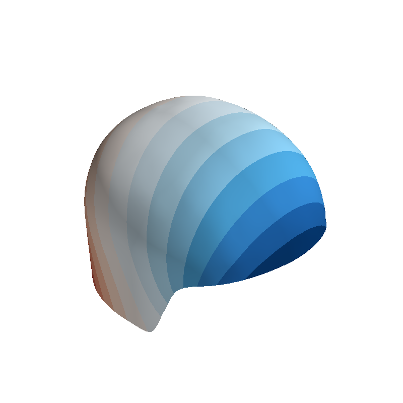

Note
Click here to download the full example code
Flatten mesh using conformal mapping¶
Map 3D mesh to a 2D (complex) plane with angle-preserving (conformal) mapping
Based on these course notes https://www.cs.cmu.edu/~kmcrane/Projects/DDG/ section 7.4.
import numpy as np
from bfieldtools.flatten_mesh import flatten_mesh
from bfieldtools.flatten_mesh import mesh2plane
from bfieldtools.flatten_mesh import plane2mesh
from bfieldtools.utils import load_example_mesh
- 
- 
Out:
<mayavi.modules.surface.Surface object at 0x7fa1d9f32ad0>
lls = np.linspace(0.01,1.0, 100) mm = [] for ll in lls:
u, v, mesh2d = flatten_mesh(mesh, _lambda=ll) d = mesh2d.area_faces / mesh.area_faces mm.append(np.std(d)/np.mean(d)) print(np.std(d)/np.mean(d))
plt.plot(lls, mm)
plot_data_on_faces(mesh2d, mesh2d.area_faces / mesh.area_faces)
Out:
<mayavi.modules.surface.Surface object at 0x7fa1d9b796b0>
from bfieldtools.mesh_calculus import gradient
gx = gradient(u, mesh)
gy = gradient(v, mesh)
cos = np.sum(gx * gy, axis=0) / (
np.linalg.norm(gx, axis=0) * np.linalg.norm(gy, axis=0)
)
plot_data_on_faces(mesh, cos, vmin=-1, vmax=1)
mlab.quiver3d(*mesh.triangles_center.T, *gx, color=(1, 0, 0), mode="arrow")
q = mlab.quiver3d(*mesh.triangles_center.T, *gy, color=(0, 0, 1), mode="arrow")
q.scene.isometric_view()
d = np.sqrt(3 / 4)
m = np.min((u.min(), v.min()))
mm = np.min((u.max(), v.max()))
xx = np.linspace(m * 1.05, mm * 1.05, 12)
yy = np.linspace(m * 1.05, mm * 1.05, 12) * d
p = np.array(np.meshgrid(xx, yy, 0, indexing="ij"))
p[0, :, ::2] += (xx[1] - xx[0]) * 0.5
p = p.reshape(3, -1).T
pp = plane2mesh(p, mesh, u, v)
plot_data_on_vertices(mesh, u, ncolors=15)
mlab.points3d(*pp.T, scale_factor=0.01)
Out:
<mayavi.modules.glyph.Glyph object at 0x7fa1d9895350>
Total running time of the script: ( 0 minutes 3.126 seconds)
Estimated memory usage: 173 MB